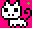

oObjectGroup类的成员函数，获得与碰撞点相碰的被碰撞物体列表。
void GetCollisionList(oPoint& kPoint,vector<oObject*>& kList,bool bCheckImage = false);
参数 kPoint ——游戏世界中的一个点结构体
kList ——用来存储指向被碰撞对象的指针的列表
bCheckImage ——用来指明是否通过对象上的图片来判断碰撞，true通过图片，false不通过图片，默认不通过图片进行检测
——如果kPoint是鼠标在游戏世界中的位置，要注意由oInput获得的鼠标坐标只是鼠标在显示区域上的坐标，要转为游戏世界的坐标要这样做：
int viewX = oInput::GetSingleton()->GetCursorX();
int viewY = oInput::GetSingleton()->GetCursorY();
int gameX = viewX + oScreen::GetSingleton()->GetX();
int gameY = viewY + oScreen::GetSingleton()->GetY();
——图中绿色的点为检测的点，粉色部分为物体图上的透明部分，物体的宽高与图片宽高相同，如果bCheckImage=false，那么此刻可以检测到碰撞，如果bCheckImage=true那就没有碰撞，因为此时透明部分不算碰撞
——关于碰撞函数的使用请参考
void GetCollisionList(oObject* pkObj,vector<oObject*>& kList,bool bCheckImage = false);
里的示例